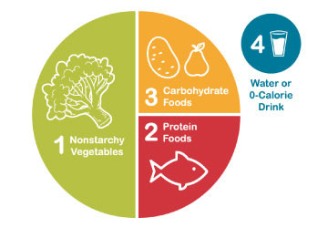
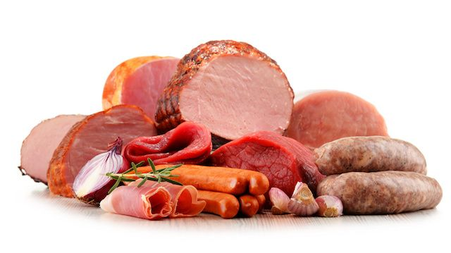
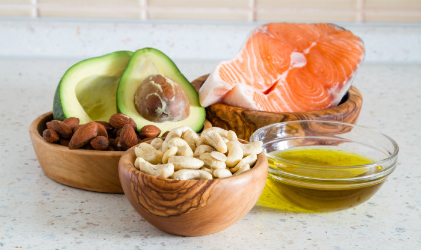
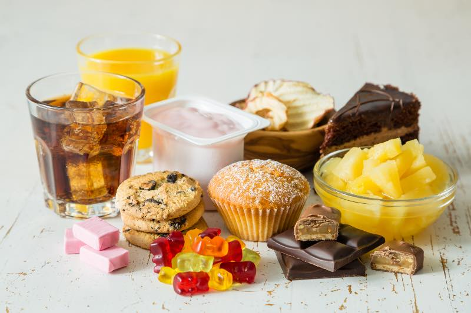
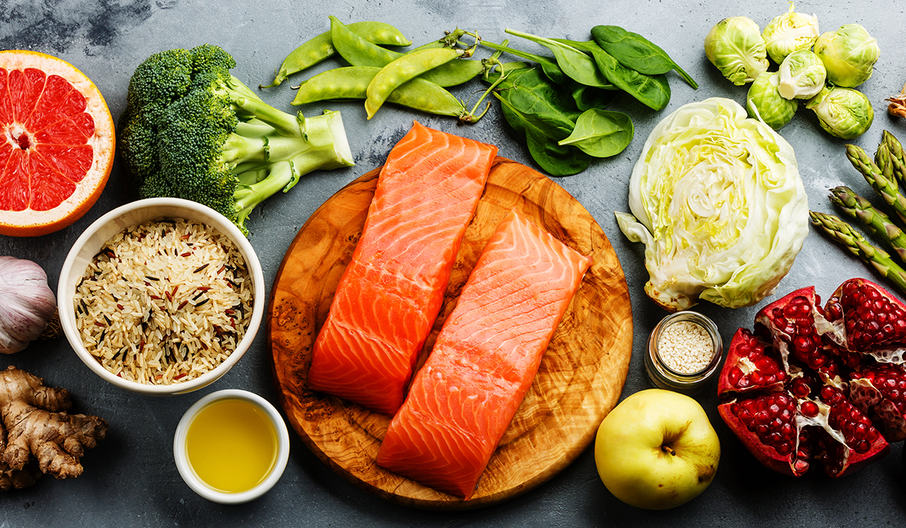

HOME
HOME
Receiving a diabetes diagnosis is scary—but know that it doesn’t have to stop you and your family from living a healthy life.

All carbs affect blood glucose levels so it’s important to know which foods contain carbohydrates. Choose the healthier foods that contain carbs and be aware of your portion sizes.
At the same time, it’s also important to cut down on foods low in fibre such as white bread, white rice and highly-processed cereals. You can check food labels when you’re looking for foods high in fibre if you’re unsure.
Eating lots of salt can increase your risk of high blood pressure, which in turn increases risk of heart diseases and stroke. And when you have diabetes, you’re already more at risk of all of these conditions.
Try to limit yourself to a maximum of 6g (one teaspoonful) of salt a day. Lots of pre-packaged foods already contain salt so remember to check food labels and choose those with less salt. Cooking from scratch will help you keep an eye on how much salt you’re eating. You can also get creative and swap out salt for different types of herbs and spices to add that extra flavour.

If you’re cutting down on carbs, you might start to have bigger portions of meat to fill you up. But it’s not a good idea to do this with red and processed meat, like ham, bacon, sausages, beef and lamb. These all have links with heart problems and cancers.
Beans, peas and lentils are also very high in fibre and don’t affect your blood glucose levels too much – making them a great swap for processed and red meat and keeping you feeling full. Most of us know that fish is good for us, but oily fish like salmon and mackerel are even better. These are rich in something called omega-3 oil, which helps protect your heart. Try and aim to eat two portions of oily fish a week.
We know eating fruit and veg is good for you. It’s always a good thing aim to eat more at meal times and have them as snacks if you’re hungry. This can help you get the vitamins, minerals and fibre your body needs every day to help keep you healthy.
You might be wondering about fruit and if you should avoid it because it’s sugary? The answer is no. Whole fruit is good for everyone and if you have diabetes, it’s no different. Fruits do contain sugar, but it’s natural sugar. This is different to the added sugar (also known as free sugars) that are in things like chocolate, biscuits and cakes.
Products like fruit juices also count as added sugar, so go for whole fruit instead. This can be fresh, frozen, dried or tinned (in juice, not in syrup). And it’s best to eat it throughout the day instead of one bigger portion in one go.

We all need fat in our diet because it gives us energy. But different types of fat affect our health in different ways.
Healthier fats are in foods like unsalted nuts, seeds, avocados, oily fish, olive oil, rapeseed oil and sunflower oil. Some saturated fats can increase the amount of cholesterol in your blood, increasing your risk of heart problems. These are mainly found in animal products and prepared food like:
It’s still a good idea to cut down on using oils in general, so try to grill, steam or bake foods instead.

We know cutting out sugar can be really hard at the beginning, so small practical swaps are a good starting point when you’re trying to cut down on excess sugar. Swapping sugary drinks, energy drinks and fruit juices with water, plain milk, or tea and coffee without sugar can be a good start.
You can always try low or zero-calorie sweeteners (also known as artificial sweeteners) to help you cut back. Cutting out these added sugars can help you control your blood glucose levels and help keep your weight down. If your diabetes treatment means you get hypos, and you use sugary drinks to treat them, this is still important for your diabetes management and you shouldn’t cut this out. However, if you are having regular hypos it is really important to discuss this with your diabetes team.
Alcohol is high in calories, so if you do drink and you’re trying to lose weight, think about cutting back. Try to keep to a maximum of 14 units a week. But spread it out to avoid binge drinking, and go several days a week without alcohol.
If you take insulin or other diabetes medications, it’s also not a good idea to drink on an empty stomach. This is because alcohol can make hypos more likely to happen.

There’s no evidence that mineral and vitamin supplements help you manage your diabetes. So, unless you’ve been told to take something by your healthcare team, like folic acid for pregnancy, you don’t need to take supplements.
It’s better to get your essential nutrients by eating a mixture of different foods. This is because some supplements can affect your medications or make some diabetes complications worse, like kidney disease.